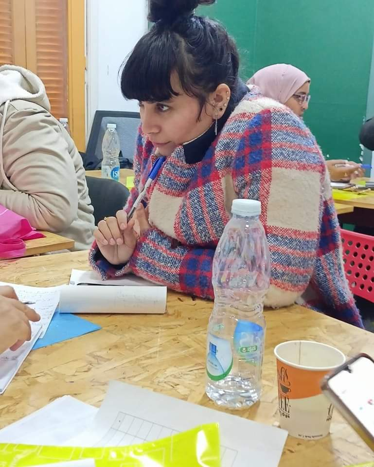

العنف ضد المرأة على أنّه أي سلوك عنيف يمارس ضدّها، ويقوم على التعصّب للجنس، ويؤدّي إلى إلحاق الأذى بها على الجوانب الجسديّة، والنفسيّة، والجنسيّة، ويُعدّ تهديد المرأة بأيّ شكل من الأشكال، وحرمانها، والحدّ من حريتها في حياتها الخاصّة أو العامة من ممارسات العنف، ويشكّل العنف ضدّ المرأة انتهاكاً واضحاً وصريحاً لحقوق الإنسان؛، فهو يمنعها من التمتّع بحقوقها الكاملة، ويجدر بالذكر أنّ عواقب العنف ليس على المرأة فقط، بل تؤثّر أيضاً على الأسرة والمجتمع بأكمله، وذلك لما يترتّب عليه من آثار سلبية اجتماعيّة، واقتصاديّة، وصحية وغيرها، والعنف ضدّ المرأة لا يرتبط بثقافة، أو عرف، أو طبقة اجتماعيّة بعَينِها، بل هو ظاهرة عامة. وتم إنشاء العديد من المبادرات للمكافحة ظاهره العنف ومن المبادرات التي مازالت موجودة حتي الأن هي مبادرة "مؤنث سالم " في هذا الحوار حدثتنا أستاذة أسماء فتحي رئيسة مبادرة مؤنث سالم سنتعرف عن أهم الفاعليات والجهود المبذولة للحماية النساء ومناهضة العنف الذي تواجهه، حيث بدأت بتوضيح ان مبادرة مؤنث سالم اطلقت في مارس من العام الماضي وبالتزامن مع إنتخابات نقابة الصحفيين بأول حملة تم إطلاقها عن مشاكل الصحفيات في أنها تختلف عن الرجل في المهنة وتم اطلاق سلسلة من الفيديوهات عنوانها "الصحفيات عايزين اي " وعرضنا اراء لأشخاص تم ترشيحهم في مجلس نقابة الصحفيين وعرضنا بعض الاراء للصحفيات واقترحوا مشاكلهم حيث لايتم النظر فيها.
اهداف المبادرة
حيث تهدف المبادرة الى توفير بيئة عمل أمنه خاليه من التميز والعنف والرسالة التي تقدمها المبادرة في البداية كانت تعمل علي مشاكل الصحفيات فقط في بيئة تكفل حقهم لخلق مجتمع خالي من التميز والعنف وبعد ذلك بدأنا نتحدث عن جميع النساء بشكل عام وليست الصحفيات فقط في جروب الدعم النفسي الذي نقدمه وجدنا نساء يعملون في مهن اخرى غير الصحافة وكان من حقهم الاهتمام بقضاياهم، في هذه السنة بدأنا التوسع والعمل ايضا علي المرأه العاملة بشكل عام سواء في الصحافة اوفي مصنع او محل او اي مكان عمل أخر لخلق مجال أمن. وأكدت فتحي على ان العمل والاقسام ترتكز جميعها على المتطوعين والمتطوعات حيث قالت بان "لدينا مجموعة اعضاء مركزية في القاهرة والجيزه ومجموعة اعضاء في المحافظات المجموعة المركزية تشمل 50شخص أغلبهم من النساء، الذي أرادوا الإستفادة من المبادرة وخدماتها وهناك أيضا المجموعة التنفيذية تتكون من 20شخص يمارسون عملهم في المبادرة بشكل تطوعي وكل شخص لدية مهمة مختلفة يوجد ايضا مجموعة إدارية عليا للمبادرة تتكون من 6افراد وانا كنت فرد منهم ويوجد ايضا مجموعة وحدات منها وحدة الدعم النفسي يترأسها أخصائية نفسية إكلينكية دكتور هالة وهناك وحدة للدعم القانوني يترأسها محامية أ/هيام الجنيني وايضا وحدة الرصد والتوثيق يترأسها الدكتور/ حسني احمد ويوجد بها عدد من الباحثين للنظر في المهام التي سيتم تنفيذها وايضا جمع البيانات والمشاركة في الحملات ويوجد أشخاص من أكثر من محافظة مثل اسيوط وسوهاج والفيوم وبني سويف و25 شخص من محافظات مختلفة كما يتم العمل علي وحدات وتم تأسيس منهم 3وحدات حتي الأن، حيث تتواجد المبادرة علي مستوي المحافظات لاننا نهتم بالمشاكل التي تعاني منها النساء." واضافت " اننا مازلنا كيان ليس مؤسسي حتي الأن والفترة القادمة سنبدأ بإجراءات التأسيس وبعد إجراءات التأسيس نعمل علي التفكير في اليات الدعم والتمويل لكن في الوقت الحالي الإتفاق علي المبادرة هو إتفاق ذاتي إذا تم الإقرار بعمل إجتماع يتم حجز القاعة ويتم الدفع ذاتيا ولا يوجد تمويل من أي فرد لا محلي ولا خارجي ولاحكومي او غير حكومي وكل مايتم بداخل المبادرة هو تطوعي وليس من خلال التمويل".
اهم الحملات
وقالت فتحي "انه بعد حملة "مش ذنبي إني أم " قررنا العمل علي حملة جديده تسمي "اخترتيها ليه " شارك في هذه الحملة أكثر من 50 امرأة يحدثونا عن إختيارهم للمهن الصعبة وتم توضيح الصعوبات التي تعرضوا لها؛ حيث شارك في الحملة أعداد كبيرة من أماكن مختلفة وتم إنشاء حملة أخري عن الأجور بدأنا العمل علي فكرة الأجور لانه لايوجد عدالة في الأجور ويتم النظر في هذا الموضوع لأن النساء تتعامل علي أنها درجة ثانية وليست درجة أولي هذا يصنف ضمن العنف الإقتصادي؛ فاليوم الكثير من النساء تتعرضن لإقتصاص حقوقهم ولاجل ذلك تم تشكيل حملة بعنوان "الأجر العادل حق " حيث واجهنا العديد من الحالات اجورهن تم اقتصاصها لانهم نساء وليس علي أساس الكفاءة وتم نشر هذه الشهادات وعمل قوانين لها علاقة بالأجور فما يحدث مخالف للقانون، كما إستحضرنا ردود أفعال متعلقة بالأثر النفسي على المرأة من التمييز وإشكاليتهم النفسية وكيفية التعامل مع هذا الوضع وكانت هذه الحملة متكاملة وألقت الضوء علي إشكالية كبيرة جدا لها علاقه بالتمييز في الأجور ومدي الأثر السئ الذي يحدث للمرأة من جراء ذلك وبالأخص الصحفيات حيث كان تركيزنا في البداية ينصب علي الصحفيات فقط حيث تم إطلاق حملة "بدون أجر " والتي كانت حملة وفاعلية كبيرة تناولنا فيها العمل غير المأجور وبالأخص للمراسلات المحافظات لوذلك لعملهم بدون أجر مقابل التعيين في نقابة الصحفيين، لان نقابة الصحفيين لديها شروط في الإنضمام إليها وهذه الشروط هي العمل سنة كصحفي وهذا إبتزاز من المؤسسات تحت مسمي التدريب وبالأخص للنساء لان النساء لايتم تعينهم بسهولة بسبب الانجاب والحمل وغيرها من الأمور
وبعد اتمام الحملة تم إنشاء إيفينت كبير تم فيه دعوة كثير من الأشخاص وبدأنا في هذا الإيفينت ان نتناقش في مسألة الأجور من خلال الإيفينت الأونلاين، تم التناقش والاصغاء للكلام بعض الأشخاص وحضر هذا الحدث أكثر من 40شخص وتحدثنا عن فكره "يعني أي عمل غير مأجور" وإن مايحدث ليس قانوني ويعد إنتهاك لحقوق الإنسان وعرضنا أول ورقه صدرت من وحدة الرصد والتوثيق وكانت عن العنف الموجهه للنساء في بيئه العمل وخصوصا الصحفيات وعرضنا الجزء الخاص بالقانون والجزء النفسي وأنا كنت عرضت مسارات عمل المبادرة خلال الفترة الماضية قبل عمل الإيفينت وبعدها قررنا للعمل علي حملات مختلفة نناقش فيها كل القضايا وتم هذا بالتزامن مع حملة ال 16يوم للمناهضة العنف ضد المراة". وأضافت اننا "أطلقنا في الجزء الأول من الحمله يوم "حملة بدون أجر" وختمنا الجزء الثاني من الحملة بحملة عنوانها "ايوا انا إتعنفت" كان هدف الحملة توصيل إن العنف "مش وصمه" لان النساء المعرضة للعنف هناك شخص جني عليها وهي موصومة من العنف وخلال الشغل صدفنا إن في عنف بيمارس في صلات التحرير والاشخاص الممارسة لهذا النوع من العنف بيعرفونا إن هذا ليس عنف وإن مايحدث جزء من الشغل وهذا ليس حقيقي بالمرة وبدأنا نعرض تجارب النساء، من هذا النوع من العنف وكيف تأثروا بهذا وكيف أدى الى مشاكل متراكمة بعد ذلك اوصلتهم الى النفور من أسرهم ونفورهم من دورهم الأسري وكرههم لوجودهم وذواتهم في هذة الفترة. "
التدريبات والرؤى المستقبلية
وفي اطار الجهد المبذول هذا العام تم أنشاء أكتر من تدريب اونلاين للصحفيات وانشانا تدريب علي مدار يومان تم فيه الإستعانة بمدربين وكانت هذه التدريبات علي أرض الواقع أردنا ان نعرف الصحفيات بالقوانين الدولية والمعاهدات الموقع عليها وخصوصا سي داو الان الإتفاقيات للمناهضة التميز والعنف الواقع علي نساء سي داو كانت واحده من اهم الاتفاقيات التي لها علاقة بحماية النساء والتي كان ملزم للصحفيين التعرف عليها في عملهم وبالاخص العاملين في منطقة المجتمع المدني وعلي منطقة حقوق الإنسان وأضافت انه يلجأ لنا بشكل أساسي النساء العاملات لان لدينا شراكة مع مؤسسة قضايا المرأه المصرية في حالة وجود حالة لديها علاقة بقوانين الأحوال الشخصية او علاقة بالطلاق او الخلع او ضرب الزوج او أيا من الموضوعات التي لديها إحتياج قانوني أكبر من واجبات عملنا ان نعمل علي بيئة عمل فقط لو هذة الموضوعات بها أمر يتعلق بقانون الاحوال الشخصية او المتعلقة بالجزء، المدني نوجهها الى مؤسسة قضايا المرأة المصرية ومؤسسة محاميات مصريات وذلك لوجود برتوكول تعاون بيننا وفي حالة عدم توفير نوع الدعم نوجههم لمؤسسات الأخرى، كما ان لدينا جروب للدعم النفسي الجماعي وأحيانا توجد حالات تفرض نفسها علينا فيكون من الصعب علينا التخلي عنها. ومن الهام ان المبادة تحتوي على أخصائيين نفسيين حيث توفر جلسات دعم نفسي فردية ويوجد بروتكولات تعاون مع أطباء، نوجه إليهم الحالات التي تحتاج الي علاج وأدوية، وقد لجأ آلينا العام الماضي عدد كبير وقد استطعنا ان نقدم لهم هذا النوع من الدعم سواء في جلسات الدعم النفسي التي يقدمها الأخصائيين النفسسين أو الإحالة الي طبيب ويشرف عليه بشكل كامل الدكتور هالة حماد أخصائية نفسية أكلينكية وهي من تقوم بإختيار الأطباء، المناسبين بحكم أنها موجوده في هذا المجال وهي من تقوم بترشيح الأشخاص الذي سيقد معهم الجلسات وايضا تحدد عدد الجلسات التي تحتاجها الحالة بعد الرجوع للطبيب والدعم القانوني ما دون ذلك نقوم بعمل آحالة على الفور للأماكن التي يجوز للنساء ان تتواجد فيها ونحن نبذل أقصي جهد للدعم النساء المعرضة للعنف.
وفي نهايه الحوار اكدت فتحي ان المبادرة ستبدأ في عمل شراكات محلية في الفترة القادمة تطلع للعمل شراكات دولية مع مؤسسات شبيهه تعمل علي نفس الملفات ونجاهد في مسألة التأسيس العام القادم، وسيتم تقديم أوراق التأسيس لوزارة التضامن الإجتماعي للعمل إشهار المبادرة كمؤسسة واستيفاء الشق الإجرائي والقانوني، حيث نتطلع الي جميع النساء العاملات بشكل عام والإشكاليات التي تعاني منها المرأه والمحاولة بأكبر قدر ممكن علي تعديل أوضاعهم وخلق بيئة عمل أمنة وأن النساء تقدر على العمل مثل الرجل ولا يوجد فرق بينهم، فعلي مدار الوقت ننادي بالعدالة الچندارية وتكون هناك معيار عادل للعمل لأن العمل ليس له علاقة بالجنس سواء كان رجل او إمرأه.
- حوار صحفي مع أستاذة أسماء فتحي رئيسة مبادرة مؤنث سالم
- مصدر الصور من صفحة مبادرة مؤنث سالم على الفيس بوك